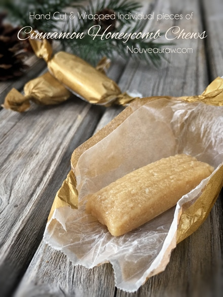

Cinnamon Honeycomb Chews

~ raw, gluten-free ~
A honey-sweet, nutty, chewy candy best describes this special treat. If you are bee-gan (vegans that don’t consume bee products), I apologize, but this recipe is built around honey.
Raw honey is far more than a natural sweetener, it’s a “functional food,” which means it is a natural food with health benefits. It contains natural antioxidants, enzymes, and minerals including iron, zinc, potassium, calcium, phosphorous, magnesium, and selenium. Vitamins found in honey include vitamin B6, thiamin, riboflavin, pantothenic acid, and niacin. (1)
I want to point out the importance of using raw honey. It has a completely different texture, not to mention health benefits than the golden-amber, liquidy store-bought stuff. Raw honey is super thick, sticky, but ooooh so yummy and much better for you. So don’t skimp on this ingredient.
When putting this recipe together, I used fine almond flour. This can be achieved by dehydrating almond pulp and grinding it to a fine flour. You could also grind down whole almonds that have been soaked and dehydrated… though this version won’t create as fine as a texture. Lastly, if use store-bought almond flour, you could use that as well. So you have some options.
I created this candy recipe for my grandparents who struggle with eating hard, churchy candy these days. My goal was to create a candy that was sweet, full of flavor, soft, chewy but ultimately… healthier than anything you can purchase off the store shelf. Mission accomplished. They were well-received by all who tried them. I hope you enjoy this recipe and please keep in touch below. Blessings, amie sue
Yields 36 (2”) candies
- 2 cups fine almond flour
- 1/2 cup + 2 Tbsp cup raw honey
- 1/8 tsp Himalayan pink salt
- 4 drops Young Living Cinnamon bark essential oil
Preparation:
Batter:
- Place the almond flour, honey, salt, and cinnamon essential oil in the food processor fitted with the “S” blade. Process until it turns into a creamy paste.
Fill the piping bag:
- It is best to use either a canvas or a silicone piping bag. I used the piping tip Ateco #808.
- While holding the bag with one hand, fold down the top with the other hand to form a cuff over your hand.
- Fill the bag 1/2 full. If you overfill the bag, the excess batter may squeeze out the wrong end not to mention that you will have less control of the bag when piping.
- Close the bag by unfolding the cuff and twisting the bag closed. This forces the batter down into the bag.
- “Burping” the bag: Make sure you release any air trapped in the bag by squeezing some of the batter out of the tip into the bowl. This is called “burping” the bag.
- If you don’t remove the air bubbles, they will come out while you are piping your straight line and cause blurps and breaks. Best to create a seamless line.
Piping:
- Hold the piping bag tip about 1/4″ above the non-stick sheet, at a 22.5-degree angle, and slowly pipe the batter from one edge of the dehydrator tray to the other.
- Keep constant pressure on the piping bag as you squeeze out the paste. This will ensure an even thickness of the line.
- After each completed line, stop and retwist the piping bag, working all paste towards the tip. This will eliminate air bubbles in the bag and give you a solid grip.
- Remember: It doesn’t have to be perfect. Just have fun and if you make a mistake, scoop it up, place back in the bag and do it again.
Dehydrate & store:
- Place the tray in the dehydrator and dry at 145 degrees (F) for 1 hour, then reduce to 115 degrees (F) for 16-24 hours.
- Once cooled, cut into 2” lengths and wrap in squares of wax paper.
- I keep mine stored in the fridge for freshness, but they can be left out at room temp.
- These candy chews won’t be hard or crunchy.
Culinary Explanations:
- Why do I start the dehydrator at 145 degrees (F)? Click (here) to learn the reason behind this.
- When working with fresh ingredients, it is important to taste test as you build a recipe. Learn why (here).
- Don’t own a dehydrator? Learn how to use your oven (here). I do however truly believe that it is a worthwhile investment. Click (here) to learn what I use.
You can use any piping tip, creating different shapes.
This batter takes a little hand strength as you can see from
my white knuckles. Hehe Just take it slow and steady.
Once you have the rows piped out, you can make score marks
with a metal ruler or knife.
© AmieSue.com